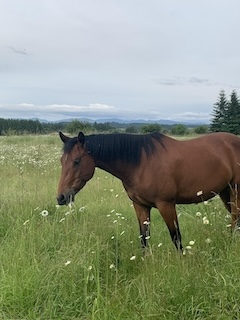
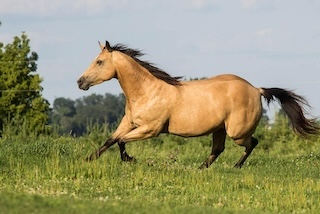
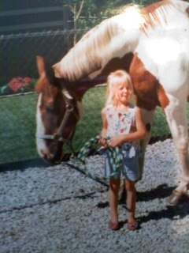

Skip to main content
My Favorite Horse Coat Colors
Bay
Brown Body
Black Mane and Tail
Black Legs

Buckskin
Tan/gold Body
Black Mane and Tail
Dorsal Stripe

Paint
Brown and White Spotted
Black and White Spotted
Tan with White Spotted

UC Davis Equine Coat Color Genetics